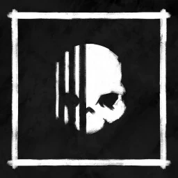
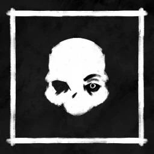

MENU
Fantasmi
scopri alcuni fantasmi presenti su phasmophobia
| Fantasma |
prova 1 |
prova 2 |
prova 3 |
| Wraith |
EMF 5 |
Spirit Box |
D.O.T.S. |
| Obake |
EMF 5 |
Ultravioletto |
Sfere di Luce |
| Deogen |
D.O.T.S. |
Spirit Box |
Libro spiritico |
| Demone |
Ultravioletto |
temperatura di congelamento |
Libro spiritico |
| Il Mimo |
Spirit Box |
Ultravioletto |
temperatura di congelamento |
Wraith

Informazioni sul Wraith
Indizi
- Non toccherà né interagirà in alcun modo con il sale
- Non verrà rallentato dal sale di livello 3 durante una
caccia
Abilità
- Può teletrasportarsi su un giocatore casuale,
lasciando EMF 2 o EMF 5 nella loro nuova posizione
(all'altezza dei piedi). Dopo essersi teletrasportati,
tornano nella loro stanza preferita
- Può teletrasportarsi su un giocatore casuale,
lasciando EMF 2 nella sua nuova posizione
Test di Conferma
- Se durante un evento o una caccia vedi il fantasma
attraversare una pila di sale senza calpestarla, si
tratta di un Wraith
- Metti il sale in linea retta sotto un sensore di
movimento di livello 1 o , assicurandoti che copra
tutta la linea laser. Se il sensore si attiva ma il sale
non viene calpestato, è un Wraith
- Se durante le indagini ottieni un EMF 2 senza alcuna
interazione nelle vicinanza, potrebbe trattarsi di un
Wraith che ha usato la sua abilità teletrasporto
Test di Eliminazione
- Se il sale viene calpestato in qualche modo dal
fantasma, non è un Wraith
Obake

Informazioni sull'Obake
Indizi
- Impronte digitali speciali a 6 dita
- Cambierà i modelli per un singolo blink durante le
cacce almeno una volta per ogni caccia di lunghezza
standard
- Ha il 25% di probabilità di non lasciare tracce
ultraviolette (comprese le orme)
- 25% di probabilità di mancare un passo durante gli
eventi
Abilità
- Può far sparire le impronte digitali due volte più
velocemente
Test di Conferma
- Trova un luogo in cui puoi loopare il fantasma
rimanendo sempre in gradi di vedere il modello. Se
mentre segui il fantasma durante una caccia vedi il
modello cambiare per un solo istante, si tratta di un
Obake
- Posiziona un solo mucchietto di sale vicino al
fantasma. Se dopo aver calpestato il sale, durante la
sequenza di passi udibili, senti un passo mancante
(ad esempio... []... passo... invece di passo...
passo... passo...), si tratta di un Obake
Deogen
Informazioni sul Deogen